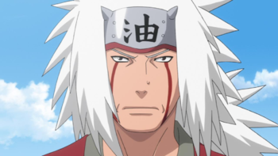

- Jaiotze-data :
- 1970ko azaroaren 11an
- Sexua:
- Gizonezkoa
- Adina:
- 54urte
- Altuera:
- 1,91m
- Pisua:
- 87,5kg
- Herria:
- Konoha
- Herrialdea:
- Susko herrialdea
- Posizioa:
- Jōnin
- Habilitatea:
- Rasengan, Escape transparente,Barrera: Método Formación de Cúpula,Barrera: Prisión de Sapo Calabaza
- Gauza interesgarriak:
-
Jiraiyaren pertsonaia, Jiraiya Goketsu Monogatari izeneko antzinako japoniar eleberri batean inspiratua izan da, non, bera, Kyushuko klan boteretsu baten kimua zen. Familia garai gogorretan erori zenean, Echigo probintziara joan zen, eta Yakuzas talde bateko buru bihurtu zen. Apo magia Myoko mendian bizi zen hilezkor bati esker ikasi zuen, Echigo Fuji bezala ezaguna. Bera maitemindu eta Tsunaderekin ezkondu zen, emakume gazte eta polit batekin, babosen magia zekiena. Ondoren, Yashagoro izeneko bere jarraitzaileetako batek sugeen magia ikasi zuen eta Orochimaru izena hartu zuen ("Orochi" k "munstro sugea" esan nahi du) eta Jiraiyari eraso zion. Bere emaztearekin batera, Jiraiyak Orochimaruren aurka borrokatu zuen, baina berak biak pozoitu zituen eta zorabiatu egin ziren, zorionez, Jiraiyaren jarraitzaile bat, salbu eta, beste une batean salbatu zuelako, kontakizunak ez duelako jarraipenik.
- Historia:
- Jiraiya Hirugarren Hokageko ikasle ohia da. Jiraiya eta bere aurreko taldekideak, Orochimaru eta Tsunade, "Hiru Sannin mitikoak" edo "Densetsu no Sannin" bezala ezagutzen dira. Geroago, Jiraiya Minato Namikazeren sensei jōnin bihurtu zen (hurrengo laugarren Hokage). Bere esaldirik gogokoena "espiritu librea" da.
Minato Hokage bihurtzen denean, Sannineko lehen liburuko protagonistaren izena jartzea erabakitzen du, "Ninja ausartaren istorioa" deitua, bere seme Uzumaki Narutori, Minatoren arabera, Jiraiyaren sasi-autobiografia bat baita, eta protagonistaren jarrera gustatzen zaio, Jiraiya Narutoren aitabitxi bihurtzen duena.
Txikitan, Jiraiyak Orochimarurekin adiskidetasun handia izan zuen, baina ez zuen lehiarik izan. Baina honek, urte batzuk geroago, Konoha traizionatu eta auzotik ihes egin zuenean, Jiraiya atzetik joan zitzaion, bere lagun ona itzultzeko konbentzitzen saiatuz. Orochimaruk eskaintzari uko egin zion eta Jiraiyari eraso zion, Konohatik betirako alde eginez. Honek diru asko duela ezagutzen da, Jiraiyaren txeke taloitegiak nahiko aberatsa dela adierazten baitu (Narutok zero dezente zituela esan zuen), hau guztia, ikha ikha bezala ezagutzen den best-seller liburu batzuen egilea izateagatik. Bere ugaritasuna gora-behera, Jiraiyari ez zaio bazkarira gonbidatzea edo dirua mailegatzea gustatzen, Narutori kentzera ere iristen delarik, eta, ondoren, ihes egiten du, hau, dirua itzultzen saiatzen denean.